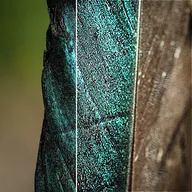

زيادة الحدة

يطبّق قناع عدم حدة باستخدام جوار 3x3 لتعزيز التفاصيل الدقيقة.
يعزز Sharpen التفاصيل الدقيقة. تحدد القوة مقدار التعزيز، ويحدد النطاق عرض الحدود المعززة. الإفراط في ذلك يُنشئ هالات حول الحدود. للحصول على طريقة تعزيز مختلفة، جرّب Unsharp Mask.
الإعدادات
| الإعداد | النوع | النطاق | الافتراضي |
|---|---|---|---|
| القوة | رقم | من 0 إلى 20 | 1 |
| نصف القطر | رقم | من 0.5 إلى 10 | 1 |